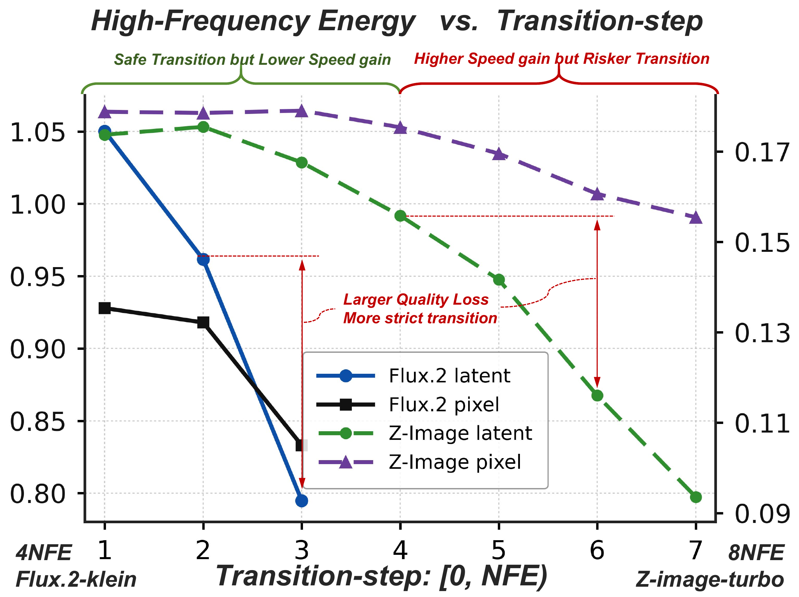
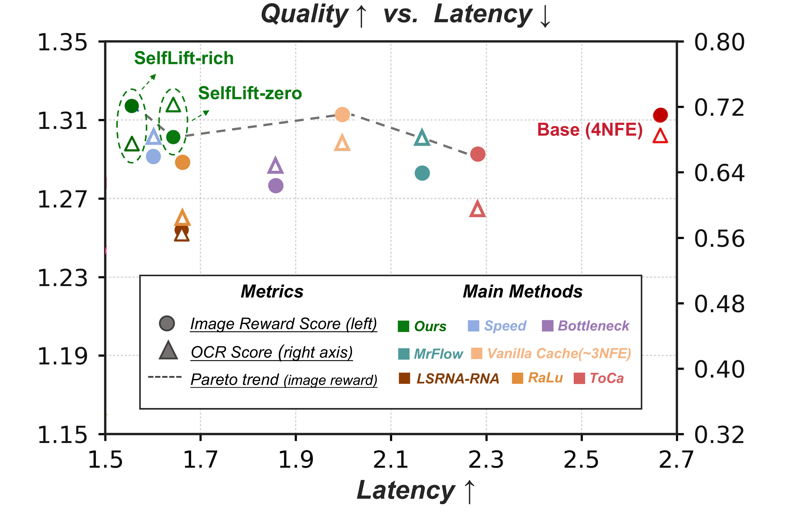
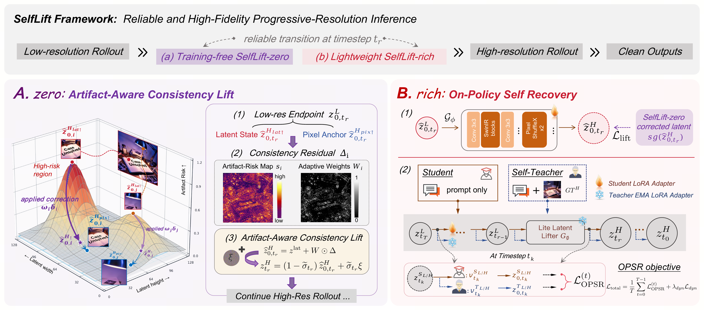
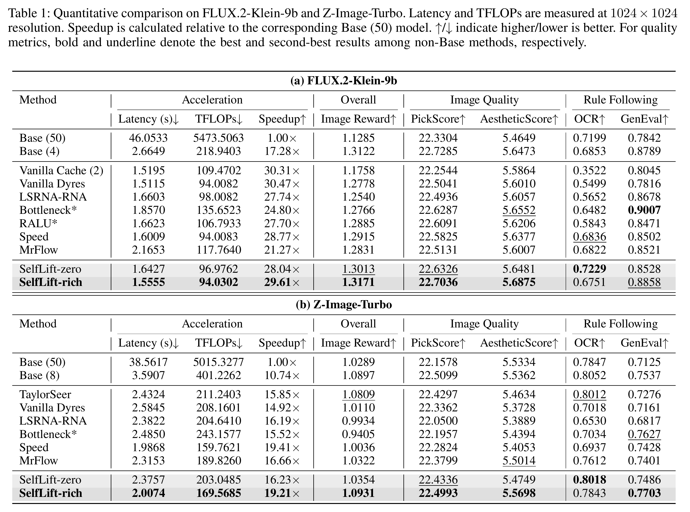

SelfLift-zero
Training-free, plug-and-play artifact-aware transition into a stable high-resolution latent state.
Few-Step Diffusion Acceleration
Self-Recovering Resolution Transition for Accelerating Few-Step Diffusion Models.
Training-free transition. Optional on-policy self lift.
Training-free, plug-and-play artifact-aware transition into a stable high-resolution latent state.
On-policy training for richer high-resolution image distributions.
01 / Abstract
Recent few-step diffusion models have shifted the inference bottleneck from sampling steps to spatial token computation. Dynamic resolution offers an effective solution by exploiting the coarse-to-fine generation process, but resolution transitions introduce artifacts and semantic drift that are difficult to recover under few-step sampling.
We propose SelfLift, a self-recovering resolution transition framework for efficient few-step diffusion models. SelfLift-Zero introduces a training-free artifact-aware consistency lift to correct transition errors without additional denoising steps or external super-resolution models. Building upon this stable transition, SelfLift-Rich further introduces on-policy self-lift training, leveraging high-resolution generation priors along the original dynamic-resolution trajectory to recover richer semantics and fine-grained details without off-policy mismatch.
SelfLift is lightweight and orthogonal to existing acceleration techniques. Experiments on FLUX.2-Klein-9b and Z-Image-Turbo show that SelfLift achieves up to 29.61× and 19.21× acceleration, respectively, while maintaining superior generation quality. These results demonstrate the effectiveness of self-recovering resolution transition for efficient high-resolution diffusion generation.
02 / Effect Comparison
SelfLift targets the aggressive-resolution regime where artifacts, text drift, and quality degradation usually become visible.



03 / Method Diagram
SelfLift reframes resolution transition as a self-recovering lift from a low-resolution rollout to a stable high-resolution latent state, then optionally improves this trajectory with on-policy self lift.

04 / Experimental Table
Quantitative comparison on FLUX.2-Klein-9B and Z-Image-Turbo at 1024 x 1024 resolution.
